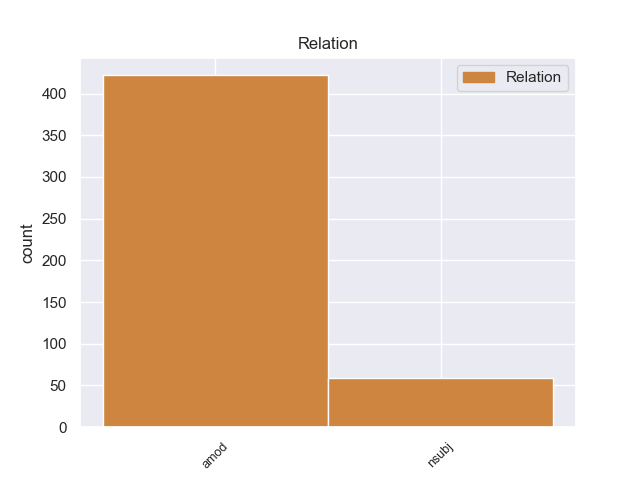
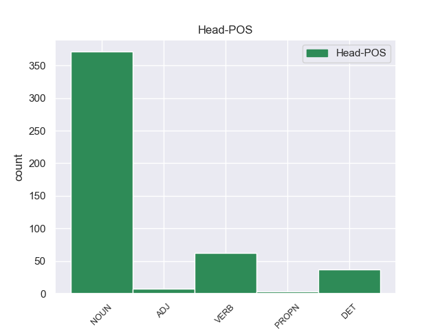
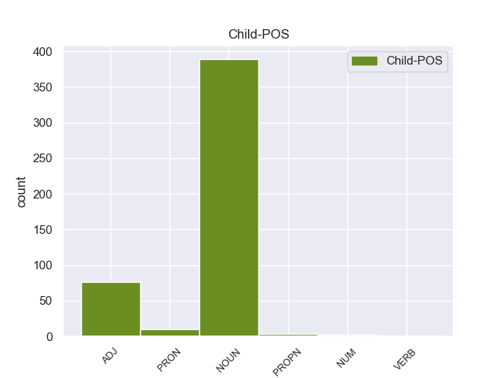

Distribution of features within this leaf



Agreement Rules sorted by frequency.
- When the dependent token is the adjectival modifier(amod) of the head token, and the dependent token is NOUN.
1 Υπ' _ _ _ _ 0 _ _ _
2 αυτές _ _ _ _ 0 _ _ _
3 τις _ _ _ _ 0 _ _ _
4 συνθήκες _ _ _ _ 0 _ _ _
5 , _ _ _ _ 0 _ _ _
6 η _ _ _ _ 0 _ _ _
7 Επιτροπή _ _ _ _ 0 _ _ _
8 Νομικών _ _ _ _ 0 _ _ _
9 Θεμάτων _ _ _ _ 0 _ _ _
10 , _ _ _ _ 0 _ _ _
11 της _ _ _ _ 0 _ _ _
12 οποίας _ _ _ _ 0 _ _ _
13 τη _ _ _ _ 0 _ _ _
14 θέση _ _ _ _ 0 _ _ _
15 αποδέχομαι _ _ _ _ 0 _ _ _
16 πλήρως _ _ _ _ 0 _ _ _
17 , _ _ _ _ 0 _ _ _
18 προτείνει _ _ _ _ 0 _ _ _
19 την _ _ _ _ 0 _ _ _
20 απόρριψη απόρριψη NOUN _ Case=Acc|Gender=Fem|Number=Sing 22 amod _ _
21 της _ _ _ _ 0 _ _ _
22 αίτησης ο NOUN _ Case=Acc|Gender=Fem|Number=Sing 0 _ _ _
23 άρσης _ _ _ _ 0 _ _ _
24 της _ _ _ _ 0 _ _ _
25 βουλευτικής _ _ _ _ 0 _ _ _
26 ασυλίας _ _ _ _ 0 _ _ _
27 την _ _ _ _ 0 _ _ _
28 οποία _ _ _ _ 0 _ _ _
29 υπέβαλε _ _ _ _ 0 _ _ _
30 το _ _ _ _ 0 _ _ _
31 γαλλικό _ _ _ _ 0 _ _ _
32 Υπουργείο _ _ _ _ 0 _ _ _
33 Δικαιοσύνης _ _ _ _ 0 _ _ _
34 , _ _ _ _ 0 _ _ _
35 σ _ _ _ _ 0 _ _ _
36 τη _ _ _ _ 0 _ _ _
37 μορφή _ _ _ _ 0 _ _ _
38 υπό _ _ _ _ 0 _ _ _
39 την _ _ _ _ 0 _ _ _
40 οποία _ _ _ _ 0 _ _ _
41 υποβλήθηκε _ _ _ _ 0 _ _ _
42 σ _ _ _ _ 0 _ _ _
43 το _ _ _ _ 0 _ _ _
44 Κοινοβούλιο _ _ _ _ 0 _ _ _
45 . _ _ _ _ 0 _ _ _
1 Το _ _ _ _ 0 _ _ _
2 Θαλάσσιο _ _ _ _ 0 _ _ _
3 Πάρκο _ _ _ _ 0 _ _ _
4 Αλοννήσου _ _ _ _ 0 _ _ _
5 είναι _ _ _ _ 0 _ _ _
6 το _ _ _ _ 0 _ _ _
7 πρώτο _ _ _ _ 0 _ _ _
8 σ _ _ _ _ 0 _ _ _
9 την _ _ _ _ 0 _ _ _
10 Ελλάδα _ _ _ _ 0 _ _ _
11 και _ _ _ _ 0 _ _ _
12 το _ _ _ _ 0 _ _ _
13 μεγαλύτερο _ _ _ _ 0 _ _ _
14 σ _ _ _ _ 0 _ _ _
15 την _ _ _ _ 0 _ _ _
16 Ευρώπη _ _ _ _ 0 _ _ _
17 και _ _ _ _ 0 _ _ _
18 τη _ _ _ _ 0 _ _ _
19 Μεσόγειο _ _ _ _ 0 _ _ _
20 , _ _ _ _ 0 _ _ _
21 το _ _ _ _ 0 _ _ _
22 οποίο _ _ _ _ 0 _ _ _
23 φιλοξενεί _ _ _ _ 0 _ _ _
24 τη _ _ _ _ 0 _ _ _
25 μεσογειακή _ _ _ _ 0 _ _ _
26 φώκια _ _ _ _ 0 _ _ _
27 monachus _ _ _ _ 0 _ _ _
28 - _ _ _ _ 0 _ _ _
29 monachus _ _ _ _ 0 _ _ _
30 ένα _ _ _ _ 0 _ _ _
31 είδος _ _ _ _ 0 _ _ _
32 που _ _ _ _ 0 _ _ _
33 εκλείπει _ _ _ _ 0 _ _ _
34 από _ _ _ _ 0 _ _ _
35 τη _ _ _ _ 0 _ _ _
36 Δυτική _ _ _ _ 0 _ _ _
37 Μεσόγειο _ _ _ _ 0 _ _ _
38 ( _ _ _ _ 0 _ _ _
39 εδώ _ _ _ _ 0 _ _ _
40 ο _ _ _ _ 0 _ _ _
41 πληθυσμός _ _ _ _ 0 _ _ _
42 φτάνει _ _ _ _ 0 _ _ _
43 τις _ _ _ _ 0 _ _ _
44 250 _ _ _ _ 0 _ _ _
45 ) _ _ _ _ 0 _ _ _
46 και _ _ _ _ 0 _ _ _
47 άλλα _ _ _ _ 0 _ _ _
48 σπάνια _ _ _ _ 0 _ _ _
49 είδη _ _ _ _ 0 _ _ _
50 χλωρίδας _ _ _ _ 0 _ _ _
51 και _ _ _ _ 0 _ _ _
52 πανίδας _ _ _ _ 0 _ _ _
53 όπως _ _ _ _ 0 _ _ _
54 η _ _ _ _ 0 _ _ _
55 αγριελιά ο ADJ _ Case=Acc|Gender=Fem|Number=Sing 62 amod _ _
56 , _ _ _ _ 0 _ _ _
57 το _ _ _ _ 0 _ _ _
58 θαμνοκυπάρισσο _ _ _ _ 0 _ _ _
59 , _ _ _ _ 0 _ _ _
60 τα _ _ _ _ 0 _ _ _
61 ποσειδώνια _ _ _ _ 0 _ _ _
62 φύκη φύκ NOUN _ Case=Acc|Gender=Fem|Number=Sing 0 _ _ _
63 αλλά _ _ _ _ 0 _ _ _
64 και _ _ _ _ 0 _ _ _
65 το _ _ _ _ 0 _ _ _
66 αγριοκάτσικο _ _ _ _ 0 _ _ _
67 των _ _ _ _ 0 _ _ _
68 Γιούρων _ _ _ _ 0 _ _ _
69 , _ _ _ _ 0 _ _ _
70 το _ _ _ _ 0 _ _ _
71 γεράκι _ _ _ _ 0 _ _ _
72 μαυροπετρίτης _ _ _ _ 0 _ _ _
73 , _ _ _ _ 0 _ _ _
74 τον _ _ _ _ 0 _ _ _
75 αιγόγλαρο _ _ _ _ 0 _ _ _
76 . _ _ _ _ 0 _ _ _
1 Εάν _ _ _ _ 0 _ _ _
2 θέλουμε _ _ _ _ 0 _ _ _
3 να _ _ _ _ 0 _ _ _
4 φέρουμε φέρουμε NOUN _ Case=Acc|Gender=Fem|Number=Sing 0 _ _ _
5 εις _ _ _ _ 0 _ _ _
6 πέρας πέρας NOUN _ Case=Acc|Gender=Fem|Number=Sing 4 nsubj _ _
7 το _ _ _ _ 0 _ _ _
8 μεταρρυθμιστικό _ _ _ _ 0 _ _ _
9 πρόγραμμα _ _ _ _ 0 _ _ _
10 που _ _ _ _ 0 _ _ _
11 παρουσιάσατε _ _ _ _ 0 _ _ _
12 , _ _ _ _ 0 _ _ _
13 τότε _ _ _ _ 0 _ _ _
14 το _ _ _ _ 0 _ _ _
15 Σώμα _ _ _ _ 0 _ _ _
16 πρέπει _ _ _ _ 0 _ _ _
17 να _ _ _ _ 0 _ _ _
18 αποκτήσει _ _ _ _ 0 _ _ _
19 ένα _ _ _ _ 0 _ _ _
20 esprit _ _ _ _ 0 _ _ _
21 de _ _ _ _ 0 _ _ _
22 corps _ _ _ _ 0 _ _ _
23 . _ _ _ _ 0 _ _ _
1 Υπάρχει _ _ _ _ 0 _ _ _
2 μια _ _ _ _ 0 _ _ _
3 άλλη _ _ _ _ 0 _ _ _
4 πλευρά _ _ _ _ 0 _ _ _
5 της _ _ _ _ 0 _ _ _
6 υπόθεσης _ _ _ _ 0 _ _ _
7 , _ _ _ _ 0 _ _ _
8 η _ _ _ _ 0 _ _ _
9 οποία οποίος PRON PRON Case=Nom|Gender=Fem|Number=Sing|Person=3|PronType=Rel 13 nsubj _ SpaceAfter=No
10 , _ _ _ _ 0 _ _ _
11 δυστυχώς _ _ _ _ 0 _ _ _
12 , _ _ _ _ 0 _ _ _
13 γεννά γεννώ VERB VERB Aspect=Imp|Mood=Ind|Number=Sing|Person=3|Tense=Pres|VerbForm=Fin|Voice=Act 0 _ _ _
14 την _ _ _ _ 0 _ _ _
15 υποψία _ _ _ _ 0 _ _ _
16 ότι _ _ _ _ 0 _ _ _
17 η _ _ _ _ 0 _ _ _
18 πρόνοια _ _ _ _ 0 _ _ _
19 σχετικά _ _ _ _ 0 _ _ _
20 με _ _ _ _ 0 _ _ _
21 τις _ _ _ _ 0 _ _ _
22 προϋποθέσεις _ _ _ _ 0 _ _ _
23 ελεύθερης _ _ _ _ 0 _ _ _
24 διεξαγωγής _ _ _ _ 0 _ _ _
25 του _ _ _ _ 0 _ _ _
26 κοινοβουλευτικού _ _ _ _ 0 _ _ _
27 έργου _ _ _ _ 0 _ _ _
28 δεν _ _ _ _ 0 _ _ _
29 απασχόλησε _ _ _ _ 0 _ _ _
30 επαρκώς _ _ _ _ 0 _ _ _
31 την _ _ _ _ 0 _ _ _
32 εισαγγελική _ _ _ _ 0 _ _ _
33 αρχή _ _ _ _ 0 _ _ _
34 : _ _ _ _ 0 _ _ _
1 Σύμφωνα _ _ _ _ 0 _ _ _
2 με _ _ _ _ 0 _ _ _
3 αναφορές _ _ _ _ 0 _ _ _
4 , _ _ _ _ 0 _ _ _
5 το _ _ _ _ 0 _ _ _
6 νησί _ _ _ _ 0 _ _ _
7 πρωτοκατοικήθηκε _ _ _ _ 0 _ _ _
8 την _ _ _ _ 0 _ _ _
9 Παλαιοιλιθική _ _ _ _ 0 _ _ _
10 εποχή _ _ _ _ 0 _ _ _
11 , _ _ _ _ 0 _ _ _
12 αποικήθηκε _ _ _ _ 0 _ _ _
13 το _ _ _ _ 0 _ _ _
14 775-_750 _ _ _ _ 0 _ _ _
15 π.Χ. _ _ _ _ 0 _ _ _
16 από _ _ _ _ 0 _ _ _
17 τους _ _ _ _ 0 _ _ _
18 Ερετριείς _ _ _ _ 0 _ _ _
19 και _ _ _ _ 0 _ _ _
20 σ _ _ _ _ 0 _ _ _
21 τη _ _ _ _ 0 _ _ _
22 συνέχεια _ _ _ _ 0 _ _ _
23 από _ _ _ _ 0 _ _ _
24 τους _ _ _ _ 0 _ _ _
25 Κορίνθιους _ _ _ _ 0 _ _ _
26 ενώ _ _ _ _ 0 _ _ _
27 σύμφωνα _ _ _ _ 0 _ _ _
28 με _ _ _ _ 0 _ _ _
29 τον _ _ _ _ 0 _ _ _
30 Όμηρο _ _ _ _ 0 _ _ _
31 , _ _ _ _ 0 _ _ _
32 εδώ _ _ _ _ 0 _ _ _
33 βρήκε βρίσκω VERB VERB Aspect=Perf|Mood=Ind|Number=Sing|Person=3|Tense=Past|VerbForm=Fin|Voice=Act 0 _ _ _
34 καταφύγιο _ _ _ _ 0 _ _ _
35 ο _ _ _ _ 0 _ _ _
36 Οδυσσέας Οδυσσέας PROPN PROPN Case=Nom|Gender=Masc|Number=Sing 33 nsubj _ SpaceAfter=No
37 . _ _ _ _ 0 _ _ _
1 Ένας ένας NUM NUM Case=Nom|Gender=Masc|Number=Sing|NumType=Card 6 nsubj _ _
2 από _ _ _ _ 0 _ _ _
3 αυτούς _ _ _ _ 0 _ _ _
4 είναι _ _ _ _ 0 _ _ _
5 ο _ _ _ _ 0 _ _ _
6 αριθμός αριθμός NOUN NOUN Case=Nom|Gender=Masc|Number=Sing 0 _ _ _
7 των _ _ _ _ 0 _ _ _
8 βίαιων _ _ _ _ 0 _ _ _
9 επιθέσεων _ _ _ _ 0 _ _ _
10 εναντίον _ _ _ _ 0 _ _ _
11 δημοσιογράφων _ _ _ _ 0 _ _ _
12 , _ _ _ _ 0 _ _ _
13 για _ _ _ _ 0 _ _ _
14 τις _ _ _ _ 0 _ _ _
15 οποίες _ _ _ _ 0 _ _ _
16 ευθύνονται _ _ _ _ 0 _ _ _
17 κυρίως _ _ _ _ 0 _ _ _
18 οπαδοί _ _ _ _ 0 _ _ _
19 της _ _ _ _ 0 _ _ _
20 νεοναζιστικής _ _ _ _ 0 _ _ _
21 οργάνωσης _ _ _ _ 0 _ _ _
22 που _ _ _ _ 0 _ _ _
23 εκπροσωπείται _ _ _ _ 0 _ _ _
24 σ _ _ _ _ 0 _ _ _
25 την _ _ _ _ 0 _ _ _
26 ελληνική _ _ _ _ 0 _ _ _
27 Βουλή _ _ _ _ 0 _ _ _
28 και _ _ _ _ 0 _ _ _
29 ένας _ _ _ _ 0 _ _ _
30 άλλος _ _ _ _ 0 _ _ _
31 λόγος _ _ _ _ 0 _ _ _
32 είναι _ _ _ _ 0 _ _ _
33 το _ _ _ _ 0 _ _ _
34 κλείσιμο _ _ _ _ 0 _ _ _
35 της _ _ _ _ 0 _ _ _
36 ελληνικής _ _ _ _ 0 _ _ _
37 δημόσιας _ _ _ _ 0 _ _ _
38 τηλεόρασης _ _ _ _ 0 _ _ _
39 και _ _ _ _ 0 _ _ _
40 ο _ _ _ _ 0 _ _ _
41 τρόπος _ _ _ _ 0 _ _ _
42 με _ _ _ _ 0 _ _ _
43 τον _ _ _ _ 0 _ _ _
44 οποίο _ _ _ _ 0 _ _ _
45 έγινε _ _ _ _ 0 _ _ _
46 αυτό _ _ _ _ 0 _ _ _
47 " _ _ _ _ 0 _ _ _
48 , _ _ _ _ 0 _ _ _
49 επεσήμανε _ _ _ _ 0 _ _ _
50 η _ _ _ _ 0 _ _ _
51 κ. _ _ _ _ 0 _ _ _
52 Χολγκάντ _ _ _ _ 0 _ _ _
53 . _ _ _ _ 0 _ _ _
1 Το _ _ _ _ 0 _ _ _
2 χαντάκι _ _ _ _ 0 _ _ _
3 έχει _ _ _ _ 0 _ _ _
4 βάθος _ _ _ _ 0 _ _ _
5 όσο _ _ _ _ 0 _ _ _
6 το _ _ _ _ 0 _ _ _
7 ύψος _ _ _ _ 0 _ _ _
8 ενός _ _ _ _ 0 _ _ _
9 ανθρώπου _ _ _ _ 0 _ _ _
10 και _ _ _ _ 0 _ _ _
11 διπλάσιο διπλάσιος NUM NUM Case=Acc|Gender=Masc|Number=Sing|NumType=Mult 12 amod _ _
12 πλάτος πλάτος NOUN NOUN Case=Acc|Gender=Masc|Number=Sing 0 _ _ _
13 . _ _ _ _ 0 _ _ _
1 Επίσης _ _ _ _ 0 _ _ _
2 , _ _ _ _ 0 _ _ _
3 ακούγονται ακούω VERB VERB Aspect=Imp|Mood=Ind|Number=Plur|Person=3|Tense=Pres|VerbForm=Fin|Voice=Pass 0 _ _ _
4 διάφορα διάφορος ADJ ADJ Case=Nom|Gender=Neut|Number=Plur 3 nsubj _ _
5 σχετικά _ _ _ _ 0 _ _ _
6 με _ _ _ _ 0 _ _ _
7 τη _ _ _ _ 0 _ _ _
8 συντακτική _ _ _ _ 0 _ _ _
9 συνέλευση _ _ _ _ 0 _ _ _
10 . _ _ _ _ 0 _ _ _
1 Ωστόσο _ _ _ _ 0 _ _ _
2 , _ _ _ _ 0 _ _ _
3 τα _ _ _ _ 0 _ _ _
4 τελευταία _ _ _ _ 0 _ _ _
5 χρόνια _ _ _ _ 0 _ _ _
6 δίνεται _ _ _ _ 0 _ _ _
7 άδεια άδει VERB _ Case=Acc|Gender=Fem|Number=Sing 15 amod _ _
8 σε _ _ _ _ 0 _ _ _
9 ορισμένους _ _ _ _ 0 _ _ _
10 φοιτητές _ _ _ _ 0 _ _ _
11 ανώτατων _ _ _ _ 0 _ _ _
12 εκπαιδευτικών _ _ _ _ 0 _ _ _
13 ιδρυμάτων _ _ _ _ 0 _ _ _
14 να _ _ _ _ 0 _ _ _
15 ψάχνουν ψάχνου NOUN _ Case=Acc|Gender=Fem|Number=Sing 0 _ _ _
16 πράγματα _ _ _ _ 0 _ _ _
17 σ _ _ _ _ 0 _ _ _
18 το _ _ _ _ 0 _ _ _
19 διαδίκτυο _ _ _ _ 0 _ _ _
20 , _ _ _ _ 0 _ _ _
21 υπό _ _ _ _ 0 _ _ _
22 αυστηρούς _ _ _ _ 0 _ _ _
23 περιορισμούς _ _ _ _ 0 _ _ _
24 και _ _ _ _ 0 _ _ _
25 παρακολούθηση _ _ _ _ 0 _ _ _
26 . _ _ _ _ 0 _ _ _
Disagree Examples:
1 Πράγματι _ _ _ _ 0 _ _ _
2 , _ _ _ _ 0 _ _ _
3 η _ _ _ _ 0 _ _ _
4 Σύμβαση _ _ _ _ 0 _ _ _
5 του _ _ _ _ 0 _ _ _
6 1991 _ _ _ _ 0 _ _ _
7 σχετικά _ _ _ _ 0 _ _ _
8 με _ _ _ _ 0 _ _ _
9 την _ _ _ _ 0 _ _ _
10 εκτέλεση εκτέλεση NOUN NOUN Case=Acc|Gender=Fem|Number=Sing 0 _ _ _
11 αλλοδαπών αλλοδαπός ADJ ADJ Case=Gen|Gender=Fem|Number=Plur 10 amod _ _
12 αποφάσεων _ _ _ _ 0 _ _ _
13 σε _ _ _ _ 0 _ _ _
14 ποινικές _ _ _ _ 0 _ _ _
15 υποθέσεις _ _ _ _ 0 _ _ _
16 - _ _ _ _ 0 _ _ _
17 η _ _ _ _ 0 _ _ _
18 οποία _ _ _ _ 0 _ _ _
19 διαφορετικά _ _ _ _ 0 _ _ _
20 θα _ _ _ _ 0 _ _ _
21 ήταν _ _ _ _ 0 _ _ _
22 σχετική _ _ _ _ 0 _ _ _
23 με _ _ _ _ 0 _ _ _
24 το _ _ _ _ 0 _ _ _
25 θέμα _ _ _ _ 0 _ _ _
26 μας _ _ _ _ 0 _ _ _
27 - _ _ _ _ 0 _ _ _
28 δεν _ _ _ _ 0 _ _ _
29 έχει _ _ _ _ 0 _ _ _
30 τεθεί _ _ _ _ 0 _ _ _
31 ακόμα _ _ _ _ 0 _ _ _
32 σε _ _ _ _ 0 _ _ _
33 ισχύ _ _ _ _ 0 _ _ _
34 , _ _ _ _ 0 _ _ _
35 δέκα _ _ _ _ 0 _ _ _
36 χρόνια _ _ _ _ 0 _ _ _
37 ύστερα _ _ _ _ 0 _ _ _
38 από _ _ _ _ 0 _ _ _
39 την _ _ _ _ 0 _ _ _
40 υπογραφή _ _ _ _ 0 _ _ _
41 της _ _ _ _ 0 _ _ _
42 . _ _ _ _ 0 _ _ _